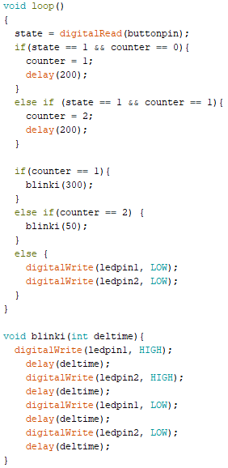

Interface and Application Programming
- Group: Compare as many tool options as possible
- Individual assignment: Write an application that interfaces a user with an input &/or output device that you made
System Idea
The idea behind this week is to connect one board to the computer and send data between seria comm to make one input/output board do something. Data will be send from a python developed interface through serial comm by pyserial.
Python, Tkinter and Pyserial
Python is a high level programming language for-general purpose programming. For more info about it you can check it wikipedia page.a>
For tutorial on how installing Python, a very simple articule can be found here.
Tkinter is a package containing all standard GUI (Graphic User Interface) for Python. Normally it comes with Python installation.
For serial comm, Pyserial is the prefered library. It allows to connect ny Python to serial communication devices.
For how to install and use Pyserial there is a tutorial here.
GUI Design and Code
I will made a simple interface with 2 buttons: One for each LED.
First part it's to call tkinter and Pyserial libraries.
Next part of the code is to open the ports. One way to test which port going to be needed when the interface starts is to connect a Arduino and check which port is already using. For this case, "COM6" will be my selected port.
Now, we define the button1 and 2 function to write 1 or 2 when press.
Interface initialize creating the window (TK() function) and defining it's properties. A canvas need to be placed to hold B1 and B2 buttons, which are labeled with the color their represent.
Finally the "root.mainloop" method keeps the program looping.
Finally the code to the interface will look like this:
Microprocessor programming
I will using a Arduino One to test my code first.
First part of the code will be variable definition. Then we open serial comm and define output pins (10 and 11).
In the loop, conditional if to read incoming data when bytes are available and another 2 conditionals to define which LEDs will light when 1 or 2 are recieved (49 and 50 are typep because those are 1 and 2 on ASCII table).
The whole code looks like this:
Testing with Arduino
After loading code on arduino one board and connect it to the computer, I run the interface and check data its been sent correctly. It works!
When 1 is read at the Arduino, red LED will turn ON; when '2', green LED will turn ON and switch red LED off.
NOTE: Interface button "blue" was changed to "green", when noticed I did not have a blue LED.
OUTPUT board coding
Part of the code from week 12 code was used to make the new one. Just added some code snippet to make the board reads arduino outputs and turn correct light when incoming pins are HIGH (Using arduino as interface with the Python interface).

Code for the attiny, its loaded (link at the bottom). When "Red" button at the interface its pressed, HIGH status change at pin9 in Arduino, feeding Pin 2 at output board.